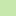

<!doctype html>
<html lang="en">
    <head>
        <meta charset="utf-8">
        <meta http-equiv="X-UA-Compatible" content="IE=edge">
        <meta name="viewport" content="initial-scale=1,user-scalable=no,maximum-scale=1,width=device-width">
        <meta name="mobile-web-app-capable" content="yes">
        <meta name="apple-mobile-web-app-capable" content="yes">
        <link rel="stylesheet" href="css/leaflet.css">
        <link rel="stylesheet" href="css/qgis2web.css"><link rel="stylesheet" href="css/fontawesome-all.min.css">
        <link rel="stylesheet" href="css/leaflet-control-geocoder.Geocoder.css">
        <link rel="stylesheet" href="css/leaflet-measure.css">
        <style>
        html, body, #map {
            width: 100%;
            height: 100%;
            padding: 0;
            margin: 0;
        }
        </style>
        <title></title>
    </head>
    <body>
        <div id="map">
        </div>
        <script src="js/qgis2web_expressions.js"></script>
        <script src="js/leaflet.js"></script>
        <script src="js/leaflet.rotatedMarker.js"></script>
        <script src="js/leaflet.pattern.js"></script>
        <script src="js/leaflet-hash.js"></script>
        <script src="js/Autolinker.min.js"></script>
        <script src="js/rbush.min.js"></script>
        <script src="js/labelgun.min.js"></script>
        <script src="js/labels.js"></script>
        <script src="js/leaflet-control-geocoder.Geocoder.js"></script>
        <script src="js/leaflet-measure.js"></script>
        <script src="data/capaLH_1.js"></script>
        <script>
        var highlightLayer;
        function highlightFeature(e) {
            highlightLayer = e.target;
            highlightLayer.openPopup();
        }
        var map = L.map('map', {
            zoomControl:true, maxZoom:28, minZoom:1
        })
        var hash = new L.Hash(map);
        map.attributionControl.setPrefix('<a href="https://github.com/tomchadwin/qgis2web" target="_blank">qgis2web</a> &middot; <a href="https://leafletjs.com" title="A JS library for interactive maps">Leaflet</a> &middot; <a href="https://qgis.org">QGIS</a>');
        var autolinker = new Autolinker({truncate: {length: 30, location: 'smart'}});
        var measureControl = new L.Control.Measure({
            position: 'topleft',
            primaryLengthUnit: 'meters',
            secondaryLengthUnit: 'kilometers',
            primaryAreaUnit: 'sqmeters',
            secondaryAreaUnit: 'hectares'
        });
        measureControl.addTo(map);
        document.getElementsByClassName('leaflet-control-measure-toggle')[0]
        .innerHTML = '';
        document.getElementsByClassName('leaflet-control-measure-toggle')[0]
        .className += ' fas fa-ruler';
        var bounds_group = new L.featureGroup([]);
        function setBounds() {
            if (bounds_group.getLayers().length) {
                map.fitBounds(bounds_group.getBounds());
            }
        }
        map.createPane('pane_StamenTonerBackground_0');
        map.getPane('pane_StamenTonerBackground_0').style.zIndex = 400;
        var layer_StamenTonerBackground_0 = L.tileLayer('http://tile.stamen.com/toner-background/{z}/{x}/{y}.png', {
            pane: 'pane_StamenTonerBackground_0',
            opacity: 1.0,
            attribution: '<a href="http://maps.stamen.com/">Map tiles by Stamen Design, under CC BY 3.0. Data by OpenStreetMap, under ODbL</a>',
            minZoom: 1,
            maxZoom: 28,
            minNativeZoom: 0,
            maxNativeZoom: 20
        });
        layer_StamenTonerBackground_0;
        map.addLayer(layer_StamenTonerBackground_0);
        function pop_capaLH_1(feature, layer) {
            layer.on({
                mouseout: function(e) {
                    if (typeof layer.closePopup == 'function') {
                        layer.closePopup();
                    } else {
                        layer.eachLayer(function(feature){
                            feature.closePopup()
                        });
                    }
                },
                mouseover: highlightFeature,
            });
            var popupContent = '<table>\
                    <tr>\
                        <th scope="row">año</th>\
                        <td>' + (feature.properties['año'] !== null ? autolinker.link(feature.properties['año'].toLocaleString()) : '') + '</td>\
                    </tr>\
                </table>';
            layer.bindPopup(popupContent, {maxHeight: 400});
        }

        function style_capaLH_1_0(feature) {
            if (feature.properties['año'] >= 962.000000 && feature.properties['año'] <= 1910.000000 ) {
                return {
                pane: 'pane_capaLH_1',
                stroke: false, 
                fill: true,
                fillOpacity: 1,
                fillColor: 'rgba(215,25,28,1.0)',
                interactive: true,
            }
            }
            if (feature.properties['año'] >= 1910.000000 && feature.properties['año'] <= 1958.000000 ) {
                return {
                pane: 'pane_capaLH_1',
                stroke: false, 
                fill: true,
                fillOpacity: 1,
                fillColor: 'rgba(240,124,74,1.0)',
                interactive: true,
            }
            }
            if (feature.properties['año'] >= 1958.000000 && feature.properties['año'] <= 1963.000000 ) {
                return {
                pane: 'pane_capaLH_1',
                stroke: false, 
                fill: true,
                fillOpacity: 1,
                fillColor: 'rgba(254,201,128,1.0)',
                interactive: true,
            }
            }
            if (feature.properties['año'] >= 1963.000000 && feature.properties['año'] <= 1967.000000 ) {
                return {
                pane: 'pane_capaLH_1',
                stroke: false, 
                fill: true,
                fillOpacity: 1,
                fillColor: 'rgba(255,255,191,1.0)',
                interactive: true,
            }
            }
            if (feature.properties['año'] >= 1967.000000 && feature.properties['año'] <= 1972.000000 ) {
                return {
                pane: 'pane_capaLH_1',
                stroke: false, 
                fill: true,
                fillOpacity: 1,
                fillColor: 'rgba(199,232,173,1.0)',
                interactive: true,
            }
            }
            if (feature.properties['año'] >= 1972.000000 && feature.properties['año'] <= 1985.000000 ) {
                return {
                pane: 'pane_capaLH_1',
                stroke: false, 
                fill: true,
                fillOpacity: 1,
                fillColor: 'rgba(128,191,171,1.0)',
                interactive: true,
            }
            }
            if (feature.properties['año'] >= 1985.000000 && feature.properties['año'] <= 2021.000000 ) {
                return {
                pane: 'pane_capaLH_1',
                stroke: false, 
                fill: true,
                fillOpacity: 1,
                fillColor: 'rgba(43,131,186,1.0)',
                interactive: true,
            }
            }
        }
        map.createPane('pane_capaLH_1');
        map.getPane('pane_capaLH_1').style.zIndex = 401;
        map.getPane('pane_capaLH_1').style['mix-blend-mode'] = 'normal';
        var layer_capaLH_1 = new L.geoJson(json_capaLH_1, {
            attribution: '',
            interactive: true,
            dataVar: 'json_capaLH_1',
            layerName: 'layer_capaLH_1',
            pane: 'pane_capaLH_1',
            onEachFeature: pop_capaLH_1,
            style: style_capaLH_1_0,
        });
        bounds_group.addLayer(layer_capaLH_1);
        map.addLayer(layer_capaLH_1);
        var osmGeocoder = new L.Control.Geocoder({
            collapsed: true,
            position: 'topleft',
            text: 'Search',
            title: 'Testing'
        }).addTo(map);
        document.getElementsByClassName('leaflet-control-geocoder-icon')[0]
        .className += ' fa fa-search';
        document.getElementsByClassName('leaflet-control-geocoder-icon')[0]
        .title += 'Search for a place';
        var baseMaps = {};
        L.control.layers(baseMaps,{'capaLH<br /><table><tr><td style="text-align: center;"></td><td>962 - 1910</td></tr><tr><td style="text-align: center;"></td><td>1910 - 1958</td></tr><tr><td style="text-align: center;"></td><td>1958 - 1963</td></tr><tr><td style="text-align: center;"></td><td>1963 - 1967</td></tr><tr><td style="text-align: center;"></td><td>1967 - 1972</td></tr><tr><td style="text-align: center;"></td><td>1972 - 1985</td></tr><tr><td style="text-align: center;"></td><td>1985 - 2021</td></tr></table>': layer_capaLH_1,"Stamen Toner Background": layer_StamenTonerBackground_0,},{collapsed:false}).addTo(map);
        setBounds();
        </script>
    </body>
</html>
